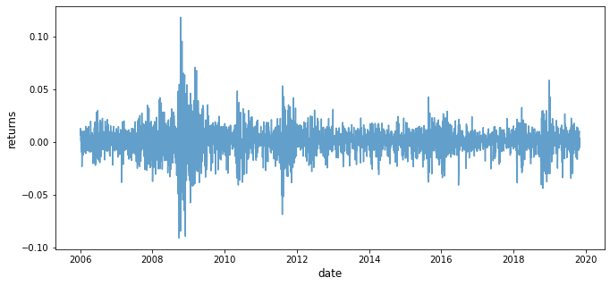
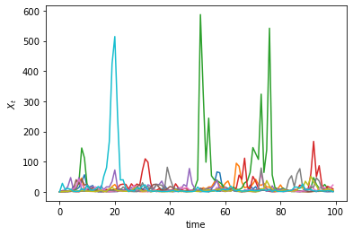
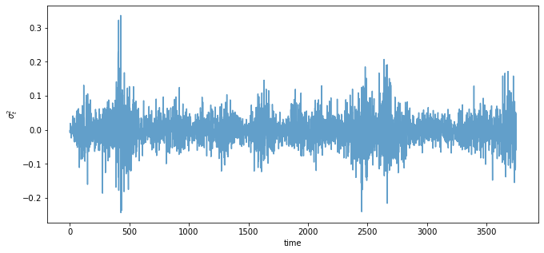
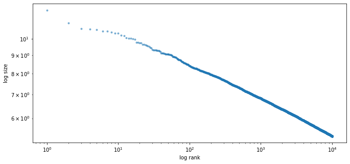

<!DOCTYPE html>

<html>
  <head>
    <meta charset="utf-8" />
    <meta name="viewport" content="width=device-width, initial-scale=1.0" />
    <title>16. Kesten Processes and Firm Dynamics &#8212; Quantitative Economics with Python</title>
    <link rel="stylesheet" href="_static/quantecon-book-theme.css" type="text/css" />
    <link rel="stylesheet" href="_static/pygments.css" type="text/css" />
    <link rel="stylesheet" type="text/css" href="_static/togglebutton.css" />
    <link rel="stylesheet" type="text/css" href="_static/copybutton.css" />
    <link rel="stylesheet" type="text/css" href="_static/mystnb.css" />
    <link rel="stylesheet" type="text/css" href="_static/sphinx-thebe.css" />
    <link rel="stylesheet" type="text/css" href="_static/panels-main.c949a650a448cc0ae9fd3441c0e17fb0.css" />
    <link rel="stylesheet" type="text/css" href="_static/panels-variables.06eb56fa6e07937060861dad626602ad.css" />
    <script id="documentation_options" data-url_root="./" src="_static/documentation_options.js"></script>
    <script src="_static/quantecon-book-theme.js"></script>
    <script src="_static/jquery.js"></script>
    <script src="_static/underscore.js"></script>
    <script src="_static/doctools.js"></script>
    <script src="_static/language_data.js"></script>
    <script src="_static/togglebutton.js"></script>
    <script src="_static/clipboard.min.js"></script>
    <script src="_static/copybutton.js"></script>
    <script src="_static/quantecon-book-theme.js"></script>
    <script >var togglebuttonSelector = '.toggle, .admonition.dropdown, .tag_hide_input div.cell_input, .tag_hide-input div.cell_input, .tag_hide_output div.cell_output, .tag_hide-output div.cell_output, .tag_hide_cell.cell, .tag_hide-cell.cell';</script>
    <script src="_static/sphinx-book-theme.7d483ff0a819d6edff12ce0b1ead3928.js"></script>
    <script async="async" src="https://cdn.jsdelivr.net/npm/mathjax@3/es5/tex-mml-chtml.js"></script>
    <script type="text/x-mathjax-config">MathJax.Hub.Config({"TeX": {"Macros": {"argmax": "arg\\,max", "argmin": "arg\\,min"}}, "tex2jax": {"inlineMath": [["\\(", "\\)"]], "displayMath": [["\\[", "\\]"]], "processRefs": false, "processEnvironments": false}})</script>
    <script async="async" src="https://unpkg.com/thebelab@latest/lib/index.js"></script>
    <script >
        const thebe_selector = ".thebe"
        const thebe_selector_input = "pre"
        const thebe_selector_output = ".output"
    </script>
    <script async="async" src="_static/sphinx-thebe.js"></script>
    <link rel="canonical" href="https://python.quantecon.org/kesten_processes.html" />
    <link rel="shortcut icon" href="_static/lectures-favicon.ico"/>
    <link rel="index" title="Index" href="genindex.html" />
    <link rel="search" title="Search" href="search.html" />
    <link rel="next" title="17. Wealth Distribution Dynamics" href="wealth_dynamics.html" />
    <link rel="prev" title="15. Application: The Samuelson Multiplier-Accelerator" href="samuelson.html" />

<!-- Normal Meta Tags -->
<meta name="author" context="Thomas J. Sargent &amp; John Stachurski" />
<meta name="keywords" content="Python, QuantEcon, Quantitative Economics, Economics, Sloan, Alfred P. Sloan Foundation, Tom J. Sargent, John Stachurski" />
<meta name="description" content=This website presents a set of lectures on quantitative economic modeling, designed and written by Thomas J. Sargent and John Stachurski. />

<!-- Twitter tags -->
<meta name="twitter:card" content="summary" />
<meta name="twitter:site" content="@quantecon" />
<meta name="twitter:title" content="Kesten Processes and Firm Dynamics"/>
<meta name="twitter:description" content="This website presents a set of lectures on quantitative economic modeling, designed and written by Thomas J. Sargent and John Stachurski.">
<meta name="twitter:creator" content="@quantecon">
<meta name="twitter:image" content="https://assets.quantecon.org/img/qe-twitter-logo.png">

<!-- Opengraph tags -->
<meta property="og:title" content="Kesten Processes and Firm Dynamics" />
<meta property="og:type" content="website" />
<meta property="og:url" content="https://python.quantecon.org/kesten_processes.html" />
<meta property="og:image" content="https://assets.quantecon.org/img/qe-og-logo.png" />
<meta property="og:description" content="This website presents a set of lectures on quantitative economic modeling, designed and written by Thomas J. Sargent and John Stachurski." />
<meta property="og:site_name" content="Quantitative Economics with Python" />

<meta name="theme-color" content="#ffffff" />


  </head>
<body>


    <span id="top"></span>

    <div class="wrapper">

        <div class="main">

            <div class="page">

                <div class="page__toc">

                    <div class="inner">

                        
                        <div class="page__toc-header">
                            On this page
                        </div>


                        <nav id="bd-toc-nav" class="page__toc-nav">

                            <ul class="nav section-nav flex-column">
                                
                                <li class="nav-item toc-entry toc-h2">
                                    <a href="#overview" class="nav-link">Overview</a>
                                </li>
                                
                                <li class="nav-item toc-entry toc-h2">
                                    <a href="#kesten-processes" class="nav-link">Kesten Processes</a><ul class="nav section-nav flex-column">
                                        
                                <li class="nav-item toc-entry toc-h3">
                                    <a href="#example-garch-volatility" class="nav-link">Example: GARCH Volatility</a>
                                </li>
                                
                                <li class="nav-item toc-entry toc-h3">
                                    <a href="#example-wealth-dynamics" class="nav-link">Example: Wealth Dynamics</a>
                                </li>
                                
                                <li class="nav-item toc-entry toc-h3">
                                    <a href="#stationarity" class="nav-link">Stationarity</a>
                                </li>
                                
                                <li class="nav-item toc-entry toc-h3">
                                    <a href="#cross-sectional-interpretation" class="nav-link">Cross-Sectional Interpretation</a>
                                </li>
                                
                                <li class="nav-item toc-entry toc-h3">
                                    <a href="#conditions-for-stationarity" class="nav-link">Conditions for Stationarity</a>
                                </li>
                                
                                    </ul>
                                </li>
                                
                                <li class="nav-item toc-entry toc-h2">
                                    <a href="#heavy-tails" class="nav-link">Heavy Tails</a><ul class="nav section-nav flex-column">
                                        
                                <li class="nav-item toc-entry toc-h3">
                                    <a href="#the-kesten-goldie-theorem" class="nav-link">The Kesten–Goldie Theorem</a>
                                </li>
                                
                                <li class="nav-item toc-entry toc-h3">
                                    <a href="#intuition" class="nav-link">Intuition</a>
                                </li>
                                
                                    </ul>
                                </li>
                                
                                <li class="nav-item toc-entry toc-h2">
                                    <a href="#application-firm-dynamics" class="nav-link">Application: Firm Dynamics</a><ul class="nav section-nav flex-column">
                                        
                                <li class="nav-item toc-entry toc-h3">
                                    <a href="#gibrat-s-law" class="nav-link">Gibrat’s Law</a>
                                </li>
                                
                                <li class="nav-item toc-entry toc-h3">
                                    <a href="#id11" class="nav-link">Heavy Tails</a>
                                </li>
                                
                                    </ul>
                                </li>
                                
                                <li class="nav-item toc-entry toc-h2">
                                    <a href="#exercises" class="nav-link">Exercises</a><ul class="nav section-nav flex-column">
                                        
                                <li class="nav-item toc-entry toc-h3">
                                    <a href="#exercise-1" class="nav-link">Exercise 1</a>
                                </li>
                                
                                <li class="nav-item toc-entry toc-h3">
                                    <a href="#exercise-2" class="nav-link">Exercise 2</a>
                                </li>
                                
                                <li class="nav-item toc-entry toc-h3">
                                    <a href="#exercise-3" class="nav-link">Exercise 3</a>
                                </li>
                                
                                <li class="nav-item toc-entry toc-h3">
                                    <a href="#exercise-4" class="nav-link">Exercise 4</a>
                                </li>
                                
                                    </ul>
                                </li>
                                
                                <li class="nav-item toc-entry toc-h2">
                                    <a href="#solutions" class="nav-link">Solutions</a><ul class="nav section-nav flex-column">
                                        
                                <li class="nav-item toc-entry toc-h3">
                                    <a href="#id13" class="nav-link">Exercise 1</a>
                                </li>
                                
                                <li class="nav-item toc-entry toc-h3">
                                    <a href="#id14" class="nav-link">Exercise 2</a>
                                </li>
                                
                                <li class="nav-item toc-entry toc-h3">
                                    <a href="#id15" class="nav-link">Exercise 3</a>
                                </li>
                                
                                <li class="nav-item toc-entry toc-h3">
                                    <a href="#id16" class="nav-link">Exercise 4</a>
                                </li>
                                
                                    </ul>
                                </li>
                                
                            </ul>

                            <p class="logo">
                                
                                    
                                    <a href=https://quantecon.org></a>
                                    
                                
                            </p>

                            <p class="powered">Powered by <a href="https://jupyterbook.org/">Jupyter Book</a></p>

                        </nav>

                        <div class="page__toc-footer">
                            
                            
                            <p><a href="#top"><strong>Back to top</strong></a></p>
                        </div>

                    </div>

                </div>

                <div class="page__header">

                    <div class="page__header-copy">

                        <p class="page__header-heading"><a href="intro.html">Quantitative Economics with Python</a></p>

                        <p class="page__header-subheading">Kesten Processes and Firm Dynamics</p>

                    </div>

                    <p class="page__header-authors">Thomas J. Sargent & John Stachurski</p>

                </div> <!-- .page__header -->


                
                <main class="page__content" role="main">
                    
                    <div>
                        
  <div id="qe-notebook-header" align="right" style="text-align:right;">
        <a href="https://quantecon.org/" title="quantecon.org">
                
        </a>
</div><div class="section" id="kesten-processes-and-firm-dynamics">
<h1><a class="toc-backref" href="#id17"><span class="section-number">16. </span>Kesten Processes and Firm Dynamics</a><a class="headerlink" href="#kesten-processes-and-firm-dynamics" title="Permalink to this headline">¶</a></h1>
<div class="contents topic" id="contents">
<span id="index-0"></span><p class="topic-title">Contents</p>
<ul class="simple">
<li><p><a class="reference internal" href="#kesten-processes-and-firm-dynamics" id="id17">Kesten Processes and Firm Dynamics</a></p>
<ul>
<li><p><a class="reference internal" href="#overview" id="id18">Overview</a></p></li>
<li><p><a class="reference internal" href="#kesten-processes" id="id19">Kesten Processes</a></p></li>
<li><p><a class="reference internal" href="#heavy-tails" id="id20">Heavy Tails</a></p></li>
<li><p><a class="reference internal" href="#application-firm-dynamics" id="id21">Application: Firm Dynamics</a></p></li>
<li><p><a class="reference internal" href="#exercises" id="id22">Exercises</a></p></li>
<li><p><a class="reference internal" href="#solutions" id="id23">Solutions</a></p></li>
</ul>
</li>
</ul>
</div>
<p>In addition to what’s in Anaconda, this lecture will need the following libraries:</p>
<div class="cell tag_hide-output docutils container">
<div class="cell_input docutils container">
<div class="highlight-ipython3 notranslate"><div class="highlight"><pre><span></span><span class="o">!</span>conda install -y quantecon
<span class="o">!</span>pip install --upgrade yfinance
</pre></div>
</div>
</div>
<div class="cell_output docutils container">
<div class="output stream highlight-myst-ansi notranslate"><div class="highlight"><pre><span></span>Collecting package metadata (current_repodata.json): - 
</pre></div>
</div>
<div class="output stream highlight-myst-ansi notranslate"><div class="highlight"><pre><span></span>\ 
</pre></div>
</div>
<div class="output stream highlight-myst-ansi notranslate"><div class="highlight"><pre><span></span>| 
</pre></div>
</div>
<div class="output stream highlight-myst-ansi notranslate"><div class="highlight"><pre><span></span>/ 
</pre></div>
</div>
<div class="output stream highlight-myst-ansi notranslate"><div class="highlight"><pre><span></span>- 
</pre></div>
</div>
<div class="output stream highlight-myst-ansi notranslate"><div class="highlight"><pre><span></span>\ 
</pre></div>
</div>
<div class="output stream highlight-myst-ansi notranslate"><div class="highlight"><pre><span></span>| 
</pre></div>
</div>
<div class="output stream highlight-myst-ansi notranslate"><div class="highlight"><pre><span></span>/ 
</pre></div>
</div>
<div class="output stream highlight-myst-ansi notranslate"><div class="highlight"><pre><span></span>- 
</pre></div>
</div>
<div class="output stream highlight-myst-ansi notranslate"><div class="highlight"><pre><span></span>\ 
</pre></div>
</div>
<div class="output stream highlight-myst-ansi notranslate"><div class="highlight"><pre><span></span>| 
</pre></div>
</div>
<div class="output stream highlight-myst-ansi notranslate"><div class="highlight"><pre><span></span>/ 
</pre></div>
</div>
<div class="output stream highlight-myst-ansi notranslate"><div class="highlight"><pre><span></span>- 
</pre></div>
</div>
<div class="output stream highlight-myst-ansi notranslate"><div class="highlight"><pre><span></span>done
Solving environment: | 
</pre></div>
</div>
<div class="output stream highlight-myst-ansi notranslate"><div class="highlight"><pre><span></span>/ 
</pre></div>
</div>
<div class="output stream highlight-myst-ansi notranslate"><div class="highlight"><pre><span></span>- 
</pre></div>
</div>
<div class="output stream highlight-myst-ansi notranslate"><div class="highlight"><pre><span></span>\ 
</pre></div>
</div>
<div class="output stream highlight-myst-ansi notranslate"><div class="highlight"><pre><span></span>| 
</pre></div>
</div>
<div class="output stream highlight-myst-ansi notranslate"><div class="highlight"><pre><span></span>/ 
</pre></div>
</div>
<div class="output stream highlight-myst-ansi notranslate"><div class="highlight"><pre><span></span>- 
</pre></div>
</div>
<div class="output stream highlight-myst-ansi notranslate"><div class="highlight"><pre><span></span>\ 
</pre></div>
</div>
<div class="output stream highlight-myst-ansi notranslate"><div class="highlight"><pre><span></span>| 
</pre></div>
</div>
<div class="output stream highlight-myst-ansi notranslate"><div class="highlight"><pre><span></span>/ 
</pre></div>
</div>
<div class="output stream highlight-myst-ansi notranslate"><div class="highlight"><pre><span></span>- 
</pre></div>
</div>
<div class="output stream highlight-myst-ansi notranslate"><div class="highlight"><pre><span></span>\ 
</pre></div>
</div>
<div class="output stream highlight-myst-ansi notranslate"><div class="highlight"><pre><span></span>| 
</pre></div>
</div>
<div class="output stream highlight-myst-ansi notranslate"><div class="highlight"><pre><span></span>/ 
</pre></div>
</div>
<div class="output stream highlight-myst-ansi notranslate"><div class="highlight"><pre><span></span>- 
</pre></div>
</div>
<div class="output stream highlight-myst-ansi notranslate"><div class="highlight"><pre><span></span>\ 
</pre></div>
</div>
<div class="output stream highlight-myst-ansi notranslate"><div class="highlight"><pre><span></span>| 
</pre></div>
</div>
<div class="output stream highlight-myst-ansi notranslate"><div class="highlight"><pre><span></span>/ 
</pre></div>
</div>
<div class="output stream highlight-myst-ansi notranslate"><div class="highlight"><pre><span></span>- 
</pre></div>
</div>
<div class="output stream highlight-myst-ansi notranslate"><div class="highlight"><pre><span></span>\ 
</pre></div>
</div>
<div class="output stream highlight-myst-ansi notranslate"><div class="highlight"><pre><span></span>| 
</pre></div>
</div>
<div class="output stream highlight-myst-ansi notranslate"><div class="highlight"><pre><span></span>/ 
</pre></div>
</div>
<div class="output stream highlight-myst-ansi notranslate"><div class="highlight"><pre><span></span>- 
</pre></div>
</div>
<div class="output stream highlight-myst-ansi notranslate"><div class="highlight"><pre><span></span>\ 
</pre></div>
</div>
<div class="output stream highlight-myst-ansi notranslate"><div class="highlight"><pre><span></span>| 
</pre></div>
</div>
<div class="output stream highlight-myst-ansi notranslate"><div class="highlight"><pre><span></span>/ 
</pre></div>
</div>
<div class="output stream highlight-myst-ansi notranslate"><div class="highlight"><pre><span></span>- 
</pre></div>
</div>
<div class="output stream highlight-myst-ansi notranslate"><div class="highlight"><pre><span></span>\ 
</pre></div>
</div>
<div class="output stream highlight-myst-ansi notranslate"><div class="highlight"><pre><span></span>done
</pre></div>
</div>
<div class="output stream highlight-myst-ansi notranslate"><div class="highlight"><pre><span></span># All requested packages already installed.
</pre></div>
</div>
<div class="output stream highlight-myst-ansi notranslate"><div class="highlight"><pre><span></span>Requirement already up-to-date: yfinance in /usr/share/miniconda3/envs/quantecon/lib/python3.8/site-packages (0.1.59)
Requirement already satisfied, skipping upgrade: requests&gt;=2.20 in /usr/share/miniconda3/envs/quantecon/lib/python3.8/site-packages (from yfinance) (2.24.0)
</pre></div>
</div>
<div class="output stream highlight-myst-ansi notranslate"><div class="highlight"><pre><span></span>Requirement already satisfied, skipping upgrade: pandas&gt;=0.24 in /usr/share/miniconda3/envs/quantecon/lib/python3.8/site-packages (from yfinance) (1.1.3)
Requirement already satisfied, skipping upgrade: numpy&gt;=1.15 in /usr/share/miniconda3/envs/quantecon/lib/python3.8/site-packages (from yfinance) (1.19.2)
Requirement already satisfied, skipping upgrade: multitasking&gt;=0.0.7 in /usr/share/miniconda3/envs/quantecon/lib/python3.8/site-packages (from yfinance) (0.0.9)
Requirement already satisfied, skipping upgrade: lxml&gt;=4.5.1 in /usr/share/miniconda3/envs/quantecon/lib/python3.8/site-packages (from yfinance) (4.6.1)
Requirement already satisfied, skipping upgrade: certifi&gt;=2017.4.17 in /usr/share/miniconda3/envs/quantecon/lib/python3.8/site-packages (from requests&gt;=2.20-&gt;yfinance) (2020.12.5)
Requirement already satisfied, skipping upgrade: urllib3!=1.25.0,!=1.25.1,&lt;1.26,&gt;=1.21.1 in /usr/share/miniconda3/envs/quantecon/lib/python3.8/site-packages (from requests&gt;=2.20-&gt;yfinance) (1.25.11)
Requirement already satisfied, skipping upgrade: chardet&lt;4,&gt;=3.0.2 in /usr/share/miniconda3/envs/quantecon/lib/python3.8/site-packages (from requests&gt;=2.20-&gt;yfinance) (3.0.4)
Requirement already satisfied, skipping upgrade: idna&lt;3,&gt;=2.5 in /usr/share/miniconda3/envs/quantecon/lib/python3.8/site-packages (from requests&gt;=2.20-&gt;yfinance) (2.10)
Requirement already satisfied, skipping upgrade: python-dateutil&gt;=2.7.3 in /usr/share/miniconda3/envs/quantecon/lib/python3.8/site-packages (from pandas&gt;=0.24-&gt;yfinance) (2.8.1)
Requirement already satisfied, skipping upgrade: pytz&gt;=2017.2 in /usr/share/miniconda3/envs/quantecon/lib/python3.8/site-packages (from pandas&gt;=0.24-&gt;yfinance) (2020.1)
</pre></div>
</div>
<div class="output stream highlight-myst-ansi notranslate"><div class="highlight"><pre><span></span>Requirement already satisfied, skipping upgrade: six&gt;=1.5 in /usr/share/miniconda3/envs/quantecon/lib/python3.8/site-packages (from python-dateutil&gt;=2.7.3-&gt;pandas&gt;=0.24-&gt;yfinance) (1.15.0)
</pre></div>
</div>
</div>
</div>
<div class="section" id="overview">
<h2><a class="toc-backref" href="#id18"><span class="section-number">16.1. </span>Overview</a><a class="headerlink" href="#overview" title="Permalink to this headline">¶</a></h2>
<p><a class="reference internal" href="ar1_processes.html"><span class="doc">Previously</span></a> we learned about linear scalar-valued stochastic processes (AR(1) models).</p>
<p>Now we generalize these linear models slightly by allowing the multiplicative coefficient to be stochastic.</p>
<p>Such processes are known as Kesten processes after German–American mathematician Harry Kesten (1931–2019)</p>
<p>Although simple to write down, Kesten processes are interesting for at least two reasons:</p>
<ol class="simple">
<li><p>A number of significant economic processes are or can be described as Kesten processes.</p></li>
<li><p>Kesten processes generate interesting dynamics, including, in some cases, heavy-tailed cross-sectional distributions.</p></li>
</ol>
<p>We will discuss these issues as we go along.</p>
<p>Let’s start with some imports:</p>
<div class="cell docutils container">
<div class="cell_input docutils container">
<div class="highlight-ipython3 notranslate"><div class="highlight"><pre><span></span><span class="o">%</span><span class="k">matplotlib</span> inline
<span class="kn">import</span> <span class="nn">matplotlib.pyplot</span> <span class="k">as</span> <span class="nn">plt</span>
<span class="n">plt</span><span class="o">.</span><span class="n">rcParams</span><span class="p">[</span><span class="s2">&quot;figure.figsize&quot;</span><span class="p">]</span> <span class="o">=</span> <span class="p">(</span><span class="mi">11</span><span class="p">,</span> <span class="mi">5</span><span class="p">)</span>  <span class="c1">#set default figure size</span>
<span class="kn">import</span> <span class="nn">numpy</span> <span class="k">as</span> <span class="nn">np</span>
<span class="kn">import</span> <span class="nn">quantecon</span> <span class="k">as</span> <span class="nn">qe</span>
</pre></div>
</div>
</div>
</div>
<p>The following two lines are only added to avoid a <code class="docutils literal notranslate"><span class="pre">FutureWarning</span></code> caused by
compatibility issues between pandas and matplotlib.</p>
<div class="cell docutils container">
<div class="cell_input docutils container">
<div class="highlight-ipython3 notranslate"><div class="highlight"><pre><span></span><span class="kn">from</span> <span class="nn">pandas.plotting</span> <span class="kn">import</span> <span class="n">register_matplotlib_converters</span>
<span class="n">register_matplotlib_converters</span><span class="p">()</span>
</pre></div>
</div>
</div>
</div>
<p>Additional technical background related to this lecture can be found in the
monograph of <span id="id1">[<a class="reference internal" href="zreferences.html#id16"><span>BDM+16</span></a>]</span>.</p>
</div>
<div class="section" id="kesten-processes">
<h2><a class="toc-backref" href="#id19"><span class="section-number">16.2. </span>Kesten Processes</a><a class="headerlink" href="#kesten-processes" title="Permalink to this headline">¶</a></h2>
<p id="index-1">A <strong>Kesten process</strong> is a stochastic process of the form</p>
<div class="math notranslate nohighlight" id="equation-kesproc">
<span class="eqno">(16.1)<a class="headerlink" href="#equation-kesproc" title="Permalink to this equation">¶</a></span>\[X_{t+1} = a_{t+1} X_t + \eta_{t+1}\]</div>
<p>where <span class="math notranslate nohighlight">\(\{a_t\}_{t \geq 1}\)</span> and <span class="math notranslate nohighlight">\(\{\eta_t\}_{t \geq 1}\)</span> are IID
sequences.</p>
<p>We are interested in the dynamics of <span class="math notranslate nohighlight">\(\{X_t\}_{t \geq 0}\)</span> when <span class="math notranslate nohighlight">\(X_0\)</span> is given.</p>
<p>We will focus on the nonnegative scalar case, where <span class="math notranslate nohighlight">\(X_t\)</span> takes values in <span class="math notranslate nohighlight">\(\mathbb R_+\)</span>.</p>
<p>In particular, we will assume that</p>
<ul class="simple">
<li><p>the initial condition <span class="math notranslate nohighlight">\(X_0\)</span> is nonnegative,</p></li>
<li><p><span class="math notranslate nohighlight">\(\{a_t\}_{t \geq 1}\)</span> is a nonnegative IID stochastic process and</p></li>
<li><p><span class="math notranslate nohighlight">\(\{\eta_t\}_{t \geq 1}\)</span> is another nonnegative IID stochastic process, independent of the first.</p></li>
</ul>
<div class="section" id="example-garch-volatility">
<h3><span class="section-number">16.2.1. </span>Example: GARCH Volatility<a class="headerlink" href="#example-garch-volatility" title="Permalink to this headline">¶</a></h3>
<p>The GARCH model is common in financial applications, where time series such as asset returns exhibit time varying volatility.</p>
<p>For example, consider the following plot of daily returns on the Nasdaq
Composite Index for the period 1st January 2006 to 1st November 2019.</p>
<div class="cell docutils container" id="ndcode">
<div class="cell_input docutils container">
<div class="highlight-ipython3 notranslate"><div class="highlight"><pre><span></span><span class="kn">import</span> <span class="nn">yfinance</span> <span class="k">as</span> <span class="nn">yf</span>
<span class="kn">import</span> <span class="nn">pandas</span> <span class="k">as</span> <span class="nn">pd</span>

<span class="n">s</span> <span class="o">=</span> <span class="n">yf</span><span class="o">.</span><span class="n">download</span><span class="p">(</span><span class="s1">&#39;^IXIC&#39;</span><span class="p">,</span> <span class="s1">&#39;2006-1-1&#39;</span><span class="p">,</span> <span class="s1">&#39;2019-11-1&#39;</span><span class="p">)[</span><span class="s1">&#39;Adj Close&#39;</span><span class="p">]</span>

<span class="n">r</span> <span class="o">=</span> <span class="n">s</span><span class="o">.</span><span class="n">pct_change</span><span class="p">()</span>

<span class="n">fig</span><span class="p">,</span> <span class="n">ax</span> <span class="o">=</span> <span class="n">plt</span><span class="o">.</span><span class="n">subplots</span><span class="p">()</span>

<span class="n">ax</span><span class="o">.</span><span class="n">plot</span><span class="p">(</span><span class="n">r</span><span class="p">,</span> <span class="n">alpha</span><span class="o">=</span><span class="mf">0.7</span><span class="p">)</span>

<span class="n">ax</span><span class="o">.</span><span class="n">set_ylabel</span><span class="p">(</span><span class="s1">&#39;returns&#39;</span><span class="p">,</span> <span class="n">fontsize</span><span class="o">=</span><span class="mi">12</span><span class="p">)</span>
<span class="n">ax</span><span class="o">.</span><span class="n">set_xlabel</span><span class="p">(</span><span class="s1">&#39;date&#39;</span><span class="p">,</span> <span class="n">fontsize</span><span class="o">=</span><span class="mi">12</span><span class="p">)</span>

<span class="n">plt</span><span class="o">.</span><span class="n">show</span><span class="p">()</span>
</pre></div>
</div>
</div>
<div class="cell_output docutils container">
<div class="output stream highlight-myst-ansi notranslate"><div class="highlight"><pre><span></span>[*********************100%***********************]  1 of 1 completed
</pre></div>
</div>
<div class="output stream highlight-myst-ansi notranslate"><div class="highlight"><pre><span></span>
</pre></div>
</div>

</div>
</div>
<p>Notice how the series exhibits bursts of volatility (high variance) and then
settles down again.</p>
<p>GARCH models can replicate this feature.</p>
<p>The GARCH(1, 1) volatility process takes the form</p>
<div class="math notranslate nohighlight" id="equation-garch11v">
<span class="eqno">(16.2)<a class="headerlink" href="#equation-garch11v" title="Permalink to this equation">¶</a></span>\[\sigma_{t+1}^2 = \alpha_0 + \sigma_t^2 (\alpha_1 \xi_{t+1}^2 + \beta)\]</div>
<p>where <span class="math notranslate nohighlight">\(\{\xi_t\}\)</span> is IID with <span class="math notranslate nohighlight">\(\mathbb E \xi_t^2 = 1\)</span> and all parameters are positive.</p>
<p>Returns on a given asset are then modeled as</p>
<div class="math notranslate nohighlight" id="equation-garch11r">
<span class="eqno">(16.3)<a class="headerlink" href="#equation-garch11r" title="Permalink to this equation">¶</a></span>\[r_t = \sigma_t \zeta_t\]</div>
<p>where <span class="math notranslate nohighlight">\(\{\zeta_t\}\)</span> is again IID and independent of <span class="math notranslate nohighlight">\(\{\xi_t\}\)</span>.</p>
<p>The volatility sequence <span class="math notranslate nohighlight">\(\{\sigma_t^2 \}\)</span>, which drives the dynamics of returns, is a Kesten process.</p>
</div>
<div class="section" id="example-wealth-dynamics">
<h3><span class="section-number">16.2.2. </span>Example: Wealth Dynamics<a class="headerlink" href="#example-wealth-dynamics" title="Permalink to this headline">¶</a></h3>
<p>Suppose that a given household saves a fixed fraction <span class="math notranslate nohighlight">\(s\)</span> of its current wealth in every period.</p>
<p>The household earns labor income <span class="math notranslate nohighlight">\(y_t\)</span> at the start of time <span class="math notranslate nohighlight">\(t\)</span>.</p>
<p>Wealth then evolves according to</p>
<div class="math notranslate nohighlight" id="equation-wealth-dynam">
<span class="eqno">(16.4)<a class="headerlink" href="#equation-wealth-dynam" title="Permalink to this equation">¶</a></span>\[w_{t+1} = R_{t+1} s w_t  + y_{t+1}\]</div>
<p>where <span class="math notranslate nohighlight">\(\{R_t\}\)</span> is the gross rate of return on assets.</p>
<p>If <span class="math notranslate nohighlight">\(\{R_t\}\)</span> and <span class="math notranslate nohighlight">\(\{y_t\}\)</span> are both IID, then <a class="reference internal" href="#equation-wealth-dynam">(16.4)</a>
is a Kesten process.</p>
</div>
<div class="section" id="stationarity">
<h3><span class="section-number">16.2.3. </span>Stationarity<a class="headerlink" href="#stationarity" title="Permalink to this headline">¶</a></h3>
<p>In earlier lectures, such as the one on <a class="reference internal" href="ar1_processes.html"><span class="doc">AR(1) processes</span></a>, we introduced the notion of a stationary distribution.</p>
<p>In the present context, we can define a stationary distribution as follows:</p>
<p>The distribution <span class="math notranslate nohighlight">\(F^*\)</span> on <span class="math notranslate nohighlight">\(\mathbb R\)</span> is called <strong>stationary</strong> for the
Kesten process <a class="reference internal" href="#equation-kesproc">(16.1)</a> if</p>
<div class="math notranslate nohighlight" id="equation-kp-stationary0">
<span class="eqno">(16.5)<a class="headerlink" href="#equation-kp-stationary0" title="Permalink to this equation">¶</a></span>\[X_t \sim F^*
\quad \implies \quad
a_{t+1} X_t + \eta_{t+1} \sim F^*\]</div>
<p>In other words, if the current state <span class="math notranslate nohighlight">\(X_t\)</span> has distribution <span class="math notranslate nohighlight">\(F^*\)</span>,
then so does the next period state <span class="math notranslate nohighlight">\(X_{t+1}\)</span>.</p>
<p>We can write this alternatively as</p>
<div class="math notranslate nohighlight" id="equation-kp-stationary">
<span class="eqno">(16.6)<a class="headerlink" href="#equation-kp-stationary" title="Permalink to this equation">¶</a></span>\[F^*(y) = \int \mathbb P\{ a_{t+1} x + \eta_{t+1} \leq y\} F^*(dx)
\quad \text{for all } y \geq 0.\]</div>
<p>The left hand side is the distribution of the next period state when the
current state is drawn from <span class="math notranslate nohighlight">\(F^*\)</span>.</p>
<p>The equality in <a class="reference internal" href="#equation-kp-stationary">(16.6)</a> states that this distribution is unchanged.</p>
</div>
<div class="section" id="cross-sectional-interpretation">
<h3><span class="section-number">16.2.4. </span>Cross-Sectional Interpretation<a class="headerlink" href="#cross-sectional-interpretation" title="Permalink to this headline">¶</a></h3>
<p>There is an important cross-sectional interpretation of stationary distributions, discussed previously but worth repeating here.</p>
<p>Suppose, for example, that we are interested in the wealth distribution — that is, the current distribution of wealth across households in a given country.</p>
<p>Suppose further that</p>
<ul class="simple">
<li><p>the wealth of each household evolves independently according to
<a class="reference internal" href="#equation-wealth-dynam">(16.4)</a>,</p></li>
<li><p><span class="math notranslate nohighlight">\(F^*\)</span> is a stationary distribution for this stochastic process and</p></li>
<li><p>there are many households.</p></li>
</ul>
<p>Then <span class="math notranslate nohighlight">\(F^*\)</span> is a steady state for the cross-sectional wealth distribution in this country.</p>
<p>In other words, if <span class="math notranslate nohighlight">\(F^*\)</span> is the current wealth distribution then it will
remain so in subsequent periods, <em>ceteris paribus</em>.</p>
<p>To see this, suppose that <span class="math notranslate nohighlight">\(F^*\)</span> is the current wealth distribution.</p>
<p>What is the fraction of households with wealth less than <span class="math notranslate nohighlight">\(y\)</span> next
period?</p>
<p>To obtain this, we sum the probability that wealth is less than <span class="math notranslate nohighlight">\(y\)</span> tomorrow, given that current wealth is <span class="math notranslate nohighlight">\(w\)</span>, weighted by the fraction of households with wealth <span class="math notranslate nohighlight">\(w\)</span>.</p>
<p>Noting that the fraction of households with wealth in interval <span class="math notranslate nohighlight">\(dw\)</span> is <span class="math notranslate nohighlight">\(F^*(dw)\)</span>, we get</p>
<div class="math notranslate nohighlight">
\[
\int \mathbb P\{ R_{t+1} s w  + y_{t+1} \leq y\} F^*(dw)
\]</div>
<p>By the definition of stationarity and the assumption that <span class="math notranslate nohighlight">\(F^*\)</span> is stationary for the wealth process, this is just <span class="math notranslate nohighlight">\(F^*(y)\)</span>.</p>
<p>Hence the fraction of households with wealth in <span class="math notranslate nohighlight">\([0, y]\)</span> is the same
next period as it is this period.</p>
<p>Since <span class="math notranslate nohighlight">\(y\)</span> was chosen arbitrarily, the distribution is unchanged.</p>
</div>
<div class="section" id="conditions-for-stationarity">
<h3><span class="section-number">16.2.5. </span>Conditions for Stationarity<a class="headerlink" href="#conditions-for-stationarity" title="Permalink to this headline">¶</a></h3>
<p>The Kesten process <span class="math notranslate nohighlight">\(X_{t+1} = a_{t+1} X_t + \eta_{t+1}\)</span> does not always
have a stationary distribution.</p>
<p>For example, if <span class="math notranslate nohighlight">\(a_t \equiv \eta_t \equiv 1\)</span> for all <span class="math notranslate nohighlight">\(t\)</span>, then
<span class="math notranslate nohighlight">\(X_t = X_0 + t\)</span>, which diverges to infinity.</p>
<p>To prevent this kind of divergence, we require that <span class="math notranslate nohighlight">\(\{a_t\}\)</span> is
strictly less than 1 most of the time.</p>
<p>In particular, if</p>
<div class="math notranslate nohighlight" id="equation-kp-stat-cond">
<span class="eqno">(16.7)<a class="headerlink" href="#equation-kp-stat-cond" title="Permalink to this equation">¶</a></span>\[\mathbb E \ln a_t &lt; 0
\quad \text{and} \quad
\mathbb E \eta_t &lt; \infty\]</div>
<p>then a unique stationary distribution exists on <span class="math notranslate nohighlight">\(\mathbb R_+\)</span>.</p>
<ul class="simple">
<li><p>See, for example, theorem 2.1.3 of <span id="id2">[<a class="reference internal" href="zreferences.html#id16"><span>BDM+16</span></a>]</span>, which provides slightly weaker conditions.</p></li>
</ul>
<p>As one application of this result, we see that the wealth process
<a class="reference internal" href="#equation-wealth-dynam">(16.4)</a> will have a unique stationary distribution whenever
labor income has finite mean and <span class="math notranslate nohighlight">\(\mathbb E \ln R_t  + \ln s &lt; 0\)</span>.</p>
</div>
</div>
<div class="section" id="heavy-tails">
<h2><a class="toc-backref" href="#id20"><span class="section-number">16.3. </span>Heavy Tails</a><a class="headerlink" href="#heavy-tails" title="Permalink to this headline">¶</a></h2>
<p>Under certain conditions, the stationary distribution of a Kesten process has
a Pareto tail.</p>
<p>(See our <a class="reference internal" href="heavy_tails.html"><span class="doc">earlier lecture</span></a>  on heavy-tailed distributions for background.)</p>
<p>This fact is significant for economics because of the prevalence of Pareto-tailed distributions.</p>
<div class="section" id="the-kesten-goldie-theorem">
<h3><span class="section-number">16.3.1. </span>The Kesten–Goldie Theorem<a class="headerlink" href="#the-kesten-goldie-theorem" title="Permalink to this headline">¶</a></h3>
<p>To state the conditions under which the stationary distribution of a Kesten process has a Pareto tail, we first recall that a random variable is called <strong>nonarithmetic</strong> if its distribution is not concentrated on <span class="math notranslate nohighlight">\(\{\dots, -2t, -t, 0, t, 2t, \ldots \}\)</span> for any <span class="math notranslate nohighlight">\(t \geq 0\)</span>.</p>
<p>For example, any random variable with a density is nonarithmetic.</p>
<p>The famous Kesten–Goldie Theorem (see, e.g., <span id="id3">[<a class="reference internal" href="zreferences.html#id16"><span>BDM+16</span></a>]</span>, theorem 2.4.4) states that if</p>
<ol class="simple">
<li><p>the stationarity conditions in <a class="reference internal" href="#equation-kp-stat-cond">(16.7)</a> hold,</p></li>
<li><p>the random variable <span class="math notranslate nohighlight">\(a_t\)</span> is positive with probability one and nonarithmetic,</p></li>
<li><p><span class="math notranslate nohighlight">\(\mathbb P\{a_t x + \eta_t = x\} &lt; 1\)</span> for all <span class="math notranslate nohighlight">\(x \in \mathbb R_+\)</span> and</p></li>
<li><p>there exists a positive constant <span class="math notranslate nohighlight">\(\alpha\)</span> such that</p></li>
</ol>
<div class="math notranslate nohighlight">
\[
\mathbb E a_t^\alpha = 1,
    \quad
\mathbb E \eta_t^\alpha &lt; \infty,
    \quad \text{and} \quad
\mathbb E [a_t^{\alpha+1} ] &lt; \infty
\]</div>
<p>then the stationary distribution of the Kesten process has a Pareto tail with
tail index <span class="math notranslate nohighlight">\(\alpha\)</span>.</p>
<p>More precisely, if <span class="math notranslate nohighlight">\(F^*\)</span> is the unique stationary distribution and <span class="math notranslate nohighlight">\(X^* \sim F^*\)</span>, then</p>
<div class="math notranslate nohighlight">
\[
\lim_{x \to \infty} x^\alpha \mathbb P\{X^* &gt; x\} = c
\]</div>
<p>for some positive constant <span class="math notranslate nohighlight">\(c\)</span>.</p>
</div>
<div class="section" id="intuition">
<h3><span class="section-number">16.3.2. </span>Intuition<a class="headerlink" href="#intuition" title="Permalink to this headline">¶</a></h3>
<p>Later we will illustrate the Kesten–Goldie Theorem using rank-size plots.</p>
<p>Prior to doing so, we can give the following intuition for the conditions.</p>
<p>Two important conditions are that <span class="math notranslate nohighlight">\(\mathbb E \ln a_t &lt; 0\)</span>, so the model
is stationary, and <span class="math notranslate nohighlight">\(\mathbb E a_t^\alpha = 1\)</span> for some <span class="math notranslate nohighlight">\(\alpha &gt;
0\)</span>.</p>
<p>The first condition implies that the distribution of <span class="math notranslate nohighlight">\(a_t\)</span> has a large amount of probability mass below 1.</p>
<p>The second condition implies that the distribution of <span class="math notranslate nohighlight">\(a_t\)</span> has at least some probability mass at or above 1.</p>
<p>The first condition gives us existence of the stationary condition.</p>
<p>The second condition means that the current state can be expanded by <span class="math notranslate nohighlight">\(a_t\)</span>.</p>
<p>If this occurs for several concurrent periods, the effects compound each other, since <span class="math notranslate nohighlight">\(a_t\)</span> is multiplicative.</p>
<p>This leads to spikes in the time series, which fill out the extreme right hand tail of the distribution.</p>
<p>The spikes in the time series are visible in the following simulation, which generates of 10 paths when <span class="math notranslate nohighlight">\(a_t\)</span> and <span class="math notranslate nohighlight">\(b_t\)</span> are lognormal.</p>
<div class="cell docutils container">
<div class="cell_input docutils container">
<div class="highlight-ipython3 notranslate"><div class="highlight"><pre><span></span><span class="n">μ</span> <span class="o">=</span> <span class="o">-</span><span class="mf">0.5</span>
<span class="n">σ</span> <span class="o">=</span> <span class="mf">1.0</span>

<span class="k">def</span> <span class="nf">kesten_ts</span><span class="p">(</span><span class="n">ts_length</span><span class="o">=</span><span class="mi">100</span><span class="p">):</span>
    <span class="n">x</span> <span class="o">=</span> <span class="n">np</span><span class="o">.</span><span class="n">zeros</span><span class="p">(</span><span class="n">ts_length</span><span class="p">)</span>
    <span class="k">for</span> <span class="n">t</span> <span class="ow">in</span> <span class="nb">range</span><span class="p">(</span><span class="n">ts_length</span><span class="o">-</span><span class="mi">1</span><span class="p">):</span>
        <span class="n">a</span> <span class="o">=</span> <span class="n">np</span><span class="o">.</span><span class="n">exp</span><span class="p">(</span><span class="n">μ</span> <span class="o">+</span> <span class="n">σ</span> <span class="o">*</span> <span class="n">np</span><span class="o">.</span><span class="n">random</span><span class="o">.</span><span class="n">randn</span><span class="p">())</span>
        <span class="n">b</span> <span class="o">=</span> <span class="n">np</span><span class="o">.</span><span class="n">exp</span><span class="p">(</span><span class="n">np</span><span class="o">.</span><span class="n">random</span><span class="o">.</span><span class="n">randn</span><span class="p">())</span>
        <span class="n">x</span><span class="p">[</span><span class="n">t</span><span class="o">+</span><span class="mi">1</span><span class="p">]</span> <span class="o">=</span> <span class="n">a</span> <span class="o">*</span> <span class="n">x</span><span class="p">[</span><span class="n">t</span><span class="p">]</span> <span class="o">+</span> <span class="n">b</span>
    <span class="k">return</span> <span class="n">x</span>

<span class="n">fig</span><span class="p">,</span> <span class="n">ax</span> <span class="o">=</span> <span class="n">plt</span><span class="o">.</span><span class="n">subplots</span><span class="p">()</span>

<span class="n">num_paths</span> <span class="o">=</span> <span class="mi">10</span>
<span class="n">np</span><span class="o">.</span><span class="n">random</span><span class="o">.</span><span class="n">seed</span><span class="p">(</span><span class="mi">12</span><span class="p">)</span>

<span class="k">for</span> <span class="n">i</span> <span class="ow">in</span> <span class="nb">range</span><span class="p">(</span><span class="n">num_paths</span><span class="p">):</span>
    <span class="n">ax</span><span class="o">.</span><span class="n">plot</span><span class="p">(</span><span class="n">kesten_ts</span><span class="p">())</span>

<span class="n">ax</span><span class="o">.</span><span class="n">set</span><span class="p">(</span><span class="n">xlabel</span><span class="o">=</span><span class="s1">&#39;time&#39;</span><span class="p">,</span> <span class="n">ylabel</span><span class="o">=</span><span class="s1">&#39;$X_t$&#39;</span><span class="p">)</span>
<span class="n">plt</span><span class="o">.</span><span class="n">show</span><span class="p">()</span>
</pre></div>
</div>
</div>
<div class="cell_output docutils container">

</div>
</div>
</div>
</div>
<div class="section" id="application-firm-dynamics">
<h2><a class="toc-backref" href="#id21"><span class="section-number">16.4. </span>Application: Firm Dynamics</a><a class="headerlink" href="#application-firm-dynamics" title="Permalink to this headline">¶</a></h2>
<p>As noted in our <a class="reference internal" href="heavy_tails.html"><span class="doc">lecture on heavy tails</span></a>, for common measures of firm size such as revenue or employment, the US firm size distribution exhibits a Pareto tail (see, e.g., <span id="id4">[<a class="reference internal" href="zreferences.html#id26"><span>Axt01</span></a>]</span>, <span id="id5">[<a class="reference internal" href="zreferences.html#id25"><span>Gab16</span></a>]</span>).</p>
<p>Let us try to explain this rather striking fact using the Kesten–Goldie Theorem.</p>
<div class="section" id="gibrat-s-law">
<h3><span class="section-number">16.4.1. </span>Gibrat’s Law<a class="headerlink" href="#gibrat-s-law" title="Permalink to this headline">¶</a></h3>
<p>It was postulated many years ago by Robert Gibrat <span id="id6">[<a class="reference internal" href="zreferences.html#id15"><span>Gib31</span></a>]</span> that firm size evolves according to a simple rule whereby size next period is proportional to current size.</p>
<p>This is now known as <a class="reference external" href="https://en.wikipedia.org/wiki/Gibrat%27s_law">Gibrat’s law of proportional growth</a>.</p>
<p>We can express this idea by stating that a suitably defined measure
<span class="math notranslate nohighlight">\(s_t\)</span> of firm size obeys</p>
<div class="math notranslate nohighlight" id="equation-firm-dynam-gb">
<span class="eqno">(16.8)<a class="headerlink" href="#equation-firm-dynam-gb" title="Permalink to this equation">¶</a></span>\[\frac{s_{t+1}}{s_t} = a_{t+1}\]</div>
<p>for some positive IID sequence <span class="math notranslate nohighlight">\(\{a_t\}\)</span>.</p>
<p>One implication of Gibrat’s law is that the growth rate of individual firms
does not depend on their size.</p>
<p>However, over the last few decades, research contradicting Gibrat’s law has
accumulated in the literature.</p>
<p>For example, it is commonly found that, on average,</p>
<ol class="simple">
<li><p>small firms grow faster than large firms (see, e.g., <span id="id7">[<a class="reference internal" href="zreferences.html#id14"><span>Eva87</span></a>]</span> and <span id="id8">[<a class="reference internal" href="zreferences.html#id13"><span>Hal87</span></a>]</span>) and</p></li>
<li><p>the growth rate of small firms is more volatile than that of large firms <span id="id9">[<a class="reference internal" href="zreferences.html#id12"><span>DRS89</span></a>]</span>.</p></li>
</ol>
<p>On the other hand, Gibrat’s law is generally found to be a reasonable
approximation for large firms <span id="id10">[<a class="reference internal" href="zreferences.html#id14"><span>Eva87</span></a>]</span>.</p>
<p>We can accommodate these empirical findings by modifying <a class="reference internal" href="#equation-firm-dynam-gb">(16.8)</a>
to</p>
<div class="math notranslate nohighlight" id="equation-firm-dynam">
<span class="eqno">(16.9)<a class="headerlink" href="#equation-firm-dynam" title="Permalink to this equation">¶</a></span>\[s_{t+1} = a_{t+1} s_t + b_{t+1}\]</div>
<p>where <span class="math notranslate nohighlight">\(\{a_t\}\)</span> and <span class="math notranslate nohighlight">\(\{b_t\}\)</span> are both IID and independent of each
other.</p>
<p>In the exercises you are asked to show that <a class="reference internal" href="#equation-firm-dynam">(16.9)</a> is more
consistent with the empirical findings presented above than Gibrat’s law in
<a class="reference internal" href="#equation-firm-dynam-gb">(16.8)</a>.</p>
</div>
<div class="section" id="id11">
<h3><span class="section-number">16.4.2. </span>Heavy Tails<a class="headerlink" href="#id11" title="Permalink to this headline">¶</a></h3>
<p>So what has this to do with Pareto tails?</p>
<p>The answer is that <a class="reference internal" href="#equation-firm-dynam">(16.9)</a> is a Kesten process.</p>
<p>If the conditions of the Kesten–Goldie Theorem are satisfied, then the firm
size distribution is predicted to have heavy tails — which is exactly what
we see in the data.</p>
<p>In the exercises below we explore this idea further, generalizing the firm
size dynamics and examining the corresponding rank-size plots.</p>
<p>We also try to illustrate why the Pareto tail finding is significant for
quantitative analysis.</p>
</div>
</div>
<div class="section" id="exercises">
<h2><a class="toc-backref" href="#id22"><span class="section-number">16.5. </span>Exercises</a><a class="headerlink" href="#exercises" title="Permalink to this headline">¶</a></h2>
<div class="section" id="exercise-1">
<h3><span class="section-number">16.5.1. </span>Exercise 1<a class="headerlink" href="#exercise-1" title="Permalink to this headline">¶</a></h3>
<p>Simulate and plot 15 years of daily returns (consider each year as having 250
working days) using the GARCH(1, 1) process in <a class="reference internal" href="#equation-garch11v">(16.2)</a>–<a class="reference internal" href="#equation-garch11r">(16.3)</a>.</p>
<p>Take <span class="math notranslate nohighlight">\(\xi_t\)</span> and <span class="math notranslate nohighlight">\(\zeta_t\)</span> to be independent and standard normal.</p>
<p>Set <span class="math notranslate nohighlight">\(\alpha_0 = 0.00001, \alpha_1 = 0.1, \beta = 0.9\)</span> and <span class="math notranslate nohighlight">\(\sigma_0 = 0\)</span>.</p>
<p>Compare visually with the Nasdaq Composite Index returns <a class="reference internal" href="#ndcode"><span class="std std-ref">shown above</span></a>.</p>
<p>While the time path differs, you should see bursts of high volatility.</p>
</div>
<div class="section" id="exercise-2">
<h3><span class="section-number">16.5.2. </span>Exercise 2<a class="headerlink" href="#exercise-2" title="Permalink to this headline">¶</a></h3>
<p>In our discussion of firm dynamics, it was claimed that <a class="reference internal" href="#equation-firm-dynam">(16.9)</a> is more consistent with the empirical literature than Gibrat’s law in <a class="reference internal" href="#equation-firm-dynam-gb">(16.8)</a>.</p>
<p>(The empirical literature was reviewed immediately above <a class="reference internal" href="#equation-firm-dynam">(16.9)</a>.)</p>
<p>In what sense is this true (or false)?</p>
</div>
<div class="section" id="exercise-3">
<h3><span class="section-number">16.5.3. </span>Exercise 3<a class="headerlink" href="#exercise-3" title="Permalink to this headline">¶</a></h3>
<p>Consider an arbitrary Kesten process as given in <a class="reference internal" href="#equation-kesproc">(16.1)</a>.</p>
<p>Suppose that <span class="math notranslate nohighlight">\(\{a_t\}\)</span> is lognormal with parameters <span class="math notranslate nohighlight">\((\mu,
\sigma)\)</span>.</p>
<p>In other words, each <span class="math notranslate nohighlight">\(a_t\)</span> has the same distribution as <span class="math notranslate nohighlight">\(\exp(\mu + \sigma Z)\)</span> when <span class="math notranslate nohighlight">\(Z\)</span> is standard normal.</p>
<p>Suppose further that <span class="math notranslate nohighlight">\(\mathbb E \eta_t^r &lt; \infty\)</span> for every <span class="math notranslate nohighlight">\(r &gt; 0\)</span>, as
would be the case if, say, <span class="math notranslate nohighlight">\(\eta_t\)</span> is also lognormal.</p>
<p>Show that the conditions of the Kesten–Goldie theorem are satisfied if and
only if <span class="math notranslate nohighlight">\(\mu &lt; 0\)</span>.</p>
<p>Obtain the value of <span class="math notranslate nohighlight">\(\alpha\)</span> that makes the Kesten–Goldie conditions
hold.</p>
</div>
<div class="section" id="exercise-4">
<h3><span class="section-number">16.5.4. </span>Exercise 4<a class="headerlink" href="#exercise-4" title="Permalink to this headline">¶</a></h3>
<p>One unrealistic aspect of the firm dynamics specified in <a class="reference internal" href="#equation-firm-dynam">(16.9)</a> is
that it ignores entry and exit.</p>
<p>In any given period and in any given market, we observe significant numbers of firms entering and exiting the market.</p>
<p>Empirical discussion of this can be found in a famous paper by Hugo Hopenhayn <span id="id12">[<a class="reference internal" href="zreferences.html#id131"><span>Hop92</span></a>]</span>.</p>
<p>In the same paper, Hopenhayn builds a model of entry and exit that
incorporates profit maximization by firms and market clearing quantities, wages and prices.</p>
<p>In his model, a stationary equilibrium occurs when the number of entrants
equals the number of exiting firms.</p>
<p>In this setting, firm dynamics can be expressed as</p>
<div class="math notranslate nohighlight" id="equation-firm-dynam-ee">
<span class="eqno">(16.10)<a class="headerlink" href="#equation-firm-dynam-ee" title="Permalink to this equation">¶</a></span>\[s_{t+1} = e_{t+1} \mathbb{1}\{s_t &lt; \bar s\} +
(a_{t+1} s_t + b_{t+1}) \mathbb{1}\{s_t \geq \bar s\}\]</div>
<p>Here</p>
<ul class="simple">
<li><p>the state variable <span class="math notranslate nohighlight">\(s_t\)</span> represents productivity (which is a proxy
for output and hence firm size),</p></li>
<li><p>the IID sequence <span class="math notranslate nohighlight">\(\{ e_t \}\)</span> is thought of as a productivity draw for a new
entrant and</p></li>
<li><p>the variable <span class="math notranslate nohighlight">\(\bar s\)</span> is a threshold value that we take as given,
although it is determined endogenously in Hopenhayn’s model.</p></li>
</ul>
<p>The idea behind <a class="reference internal" href="#equation-firm-dynam-ee">(16.10)</a> is that firms stay in the market as long
as their productivity <span class="math notranslate nohighlight">\(s_t\)</span> remains at or above <span class="math notranslate nohighlight">\(\bar s\)</span>.</p>
<ul class="simple">
<li><p>In this case, their productivity updates according to <a class="reference internal" href="#equation-firm-dynam">(16.9)</a>.</p></li>
</ul>
<p>Firms choose to exit when their productivity <span class="math notranslate nohighlight">\(s_t\)</span> falls below <span class="math notranslate nohighlight">\(\bar s\)</span>.</p>
<ul class="simple">
<li><p>In this case, they are replaced by a new firm with productivity
<span class="math notranslate nohighlight">\(e_{t+1}\)</span>.</p></li>
</ul>
<p>What can we say about dynamics?</p>
<p>Although <a class="reference internal" href="#equation-firm-dynam-ee">(16.10)</a> is not a Kesten process, it does update in the
same way as a Kesten process when <span class="math notranslate nohighlight">\(s_t\)</span> is large.</p>
<p>So perhaps its stationary distribution still has Pareto tails?</p>
<p>Your task is to investigate this question via simulation and rank-size plots.</p>
<p>The approach will be to</p>
<ol class="simple">
<li><p>generate <span class="math notranslate nohighlight">\(M\)</span> draws of <span class="math notranslate nohighlight">\(s_T\)</span> when <span class="math notranslate nohighlight">\(M\)</span> and <span class="math notranslate nohighlight">\(T\)</span> are
large and</p></li>
<li><p>plot the largest 1,000 of the resulting draws in a rank-size plot.</p></li>
</ol>
<p>(The distribution of <span class="math notranslate nohighlight">\(s_T\)</span> will be close to the stationary distribution
when <span class="math notranslate nohighlight">\(T\)</span> is large.)</p>
<p>In the simulation, assume that</p>
<ul class="simple">
<li><p>each of <span class="math notranslate nohighlight">\(a_t, b_t\)</span> and <span class="math notranslate nohighlight">\(e_t\)</span> is lognormal,</p></li>
<li><p>the parameters are</p></li>
</ul>
<div class="cell docutils container">
<div class="cell_input docutils container">
<div class="highlight-ipython3 notranslate"><div class="highlight"><pre><span></span><span class="n">μ_a</span> <span class="o">=</span> <span class="o">-</span><span class="mf">0.5</span>        <span class="c1"># location parameter for a</span>
<span class="n">σ_a</span> <span class="o">=</span> <span class="mf">0.1</span>         <span class="c1"># scale parameter for a</span>
<span class="n">μ_b</span> <span class="o">=</span> <span class="mf">0.0</span>         <span class="c1"># location parameter for b</span>
<span class="n">σ_b</span> <span class="o">=</span> <span class="mf">0.5</span>         <span class="c1"># scale parameter for b</span>
<span class="n">μ_e</span> <span class="o">=</span> <span class="mf">0.0</span>         <span class="c1"># location parameter for e</span>
<span class="n">σ_e</span> <span class="o">=</span> <span class="mf">0.5</span>         <span class="c1"># scale parameter for e</span>
<span class="n">s_bar</span> <span class="o">=</span> <span class="mf">1.0</span>       <span class="c1"># threshold</span>
<span class="n">T</span> <span class="o">=</span> <span class="mi">500</span>           <span class="c1"># sampling date</span>
<span class="n">M</span> <span class="o">=</span> <span class="mi">1_000_000</span>     <span class="c1"># number of firms</span>
<span class="n">s_init</span> <span class="o">=</span> <span class="mf">1.0</span>      <span class="c1"># initial condition for each firm</span>
</pre></div>
</div>
</div>
</div>
</div>
</div>
<div class="section" id="solutions">
<h2><a class="toc-backref" href="#id23"><span class="section-number">16.6. </span>Solutions</a><a class="headerlink" href="#solutions" title="Permalink to this headline">¶</a></h2>
<div class="section" id="id13">
<h3><span class="section-number">16.6.1. </span>Exercise 1<a class="headerlink" href="#id13" title="Permalink to this headline">¶</a></h3>
<p>Here is one solution:</p>
<div class="cell docutils container">
<div class="cell_input docutils container">
<div class="highlight-ipython3 notranslate"><div class="highlight"><pre><span></span><span class="n">α_0</span> <span class="o">=</span> <span class="mf">1e-5</span>
<span class="n">α_1</span> <span class="o">=</span> <span class="mf">0.1</span>
<span class="n">β</span> <span class="o">=</span> <span class="mf">0.9</span>

<span class="n">years</span> <span class="o">=</span> <span class="mi">15</span>
<span class="n">days</span> <span class="o">=</span> <span class="n">years</span> <span class="o">*</span> <span class="mi">250</span>

<span class="k">def</span> <span class="nf">garch_ts</span><span class="p">(</span><span class="n">ts_length</span><span class="o">=</span><span class="n">days</span><span class="p">):</span>
    <span class="n">σ2</span> <span class="o">=</span> <span class="mi">0</span>
    <span class="n">r</span> <span class="o">=</span> <span class="n">np</span><span class="o">.</span><span class="n">zeros</span><span class="p">(</span><span class="n">ts_length</span><span class="p">)</span>
    <span class="k">for</span> <span class="n">t</span> <span class="ow">in</span> <span class="nb">range</span><span class="p">(</span><span class="n">ts_length</span><span class="o">-</span><span class="mi">1</span><span class="p">):</span>
        <span class="n">ξ</span> <span class="o">=</span> <span class="n">np</span><span class="o">.</span><span class="n">random</span><span class="o">.</span><span class="n">randn</span><span class="p">()</span>
        <span class="n">σ2</span> <span class="o">=</span> <span class="n">α_0</span> <span class="o">+</span> <span class="n">σ2</span> <span class="o">*</span> <span class="p">(</span><span class="n">α_1</span> <span class="o">*</span> <span class="n">ξ</span><span class="o">**</span><span class="mi">2</span> <span class="o">+</span> <span class="n">β</span><span class="p">)</span>
        <span class="n">r</span><span class="p">[</span><span class="n">t</span><span class="p">]</span> <span class="o">=</span> <span class="n">np</span><span class="o">.</span><span class="n">sqrt</span><span class="p">(</span><span class="n">σ2</span><span class="p">)</span> <span class="o">*</span> <span class="n">np</span><span class="o">.</span><span class="n">random</span><span class="o">.</span><span class="n">randn</span><span class="p">()</span>
    <span class="k">return</span> <span class="n">r</span>

<span class="n">fig</span><span class="p">,</span> <span class="n">ax</span> <span class="o">=</span> <span class="n">plt</span><span class="o">.</span><span class="n">subplots</span><span class="p">()</span>

<span class="n">np</span><span class="o">.</span><span class="n">random</span><span class="o">.</span><span class="n">seed</span><span class="p">(</span><span class="mi">12</span><span class="p">)</span>

<span class="n">ax</span><span class="o">.</span><span class="n">plot</span><span class="p">(</span><span class="n">garch_ts</span><span class="p">(),</span> <span class="n">alpha</span><span class="o">=</span><span class="mf">0.7</span><span class="p">)</span>

<span class="n">ax</span><span class="o">.</span><span class="n">set</span><span class="p">(</span><span class="n">xlabel</span><span class="o">=</span><span class="s1">&#39;time&#39;</span><span class="p">,</span> <span class="n">ylabel</span><span class="o">=</span><span class="s1">&#39;$</span><span class="se">\\</span><span class="s1">sigma_t^2$&#39;</span><span class="p">)</span>
<span class="n">plt</span><span class="o">.</span><span class="n">show</span><span class="p">()</span>
</pre></div>
</div>
</div>
<div class="cell_output docutils container">

</div>
</div>
</div>
<div class="section" id="id14">
<h3><span class="section-number">16.6.2. </span>Exercise 2<a class="headerlink" href="#id14" title="Permalink to this headline">¶</a></h3>
<p>The empirical findings are that</p>
<ol class="simple">
<li><p>small firms grow faster than large firms  and</p></li>
<li><p>the growth rate of small firms is more volatile than that of large firms.</p></li>
</ol>
<p>Also, Gibrat’s law is generally found to be a reasonable approximation for
large firms than for small firms</p>
<p>The claim is that the dynamics in <a class="reference internal" href="#equation-firm-dynam">(16.9)</a> are more consistent with
points 1-2 than Gibrat’s law.</p>
<p>To see why, we rewrite <a class="reference internal" href="#equation-firm-dynam">(16.9)</a> in terms of growth dynamics:</p>
<div class="math notranslate nohighlight" id="equation-firm-dynam-2">
<span class="eqno">(16.11)<a class="headerlink" href="#equation-firm-dynam-2" title="Permalink to this equation">¶</a></span>\[\frac{s_{t+1}}{s_t} = a_{t+1} + \frac{b_{t+1}}{s_t}\]</div>
<p>Taking <span class="math notranslate nohighlight">\(s_t = s\)</span> as given, the mean and variance of firm growth are</p>
<div class="math notranslate nohighlight">
\[
\mathbb E a
+ \frac{\mathbb E b}{s}
\quad \text{and} \quad
\mathbb V a
+ \frac{\mathbb V b}{s^2}
\]</div>
<p>Both of these decline with firm size <span class="math notranslate nohighlight">\(s\)</span>, consistent with the data.</p>
<p>Moreover, the law of motion <a class="reference internal" href="#equation-firm-dynam-2">(16.11)</a> clearly approaches Gibrat’s law
<a class="reference internal" href="#equation-firm-dynam-gb">(16.8)</a> as <span class="math notranslate nohighlight">\(s_t\)</span> gets large.</p>
</div>
<div class="section" id="id15">
<h3><span class="section-number">16.6.3. </span>Exercise 3<a class="headerlink" href="#id15" title="Permalink to this headline">¶</a></h3>
<p>Since <span class="math notranslate nohighlight">\(a_t\)</span> has a density it is nonarithmetic.</p>
<p>Since <span class="math notranslate nohighlight">\(a_t\)</span> has the same density as <span class="math notranslate nohighlight">\(a = \exp(\mu + \sigma Z)\)</span> when <span class="math notranslate nohighlight">\(Z\)</span> is standard normal, we have</p>
<div class="math notranslate nohighlight">
\[
\mathbb E \ln a_t = \mathbb E (\mu + \sigma Z) = \mu,
\]</div>
<p>and since <span class="math notranslate nohighlight">\(\eta_t\)</span> has finite moments of all orders, the stationarity
condition holds if and only if <span class="math notranslate nohighlight">\(\mu &lt; 0\)</span>.</p>
<p>Given the properties of the lognormal distribution (which has finite moments
of all orders), the only other condition in doubt is existence of a positive constant
<span class="math notranslate nohighlight">\(\alpha\)</span> such that <span class="math notranslate nohighlight">\(\mathbb E a_t^\alpha = 1\)</span>.</p>
<p>This is equivalent to the statement</p>
<div class="math notranslate nohighlight">
\[
\exp \left( \alpha \mu + \frac{\alpha^2 \sigma^2}{2} \right) = 1.
\]</div>
<p>Solving for <span class="math notranslate nohighlight">\(\alpha\)</span> gives <span class="math notranslate nohighlight">\(\alpha = -2\mu / \sigma^2\)</span>.</p>
</div>
<div class="section" id="id16">
<h3><span class="section-number">16.6.4. </span>Exercise 4<a class="headerlink" href="#id16" title="Permalink to this headline">¶</a></h3>
<p>Here’s one solution.  First we generate the observations:</p>
<div class="cell docutils container">
<div class="cell_input docutils container">
<div class="highlight-ipython3 notranslate"><div class="highlight"><pre><span></span><span class="kn">from</span> <span class="nn">numba</span> <span class="kn">import</span> <span class="n">njit</span><span class="p">,</span> <span class="n">prange</span>
<span class="kn">from</span> <span class="nn">numpy.random</span> <span class="kn">import</span> <span class="n">randn</span>


<span class="nd">@njit</span><span class="p">(</span><span class="n">parallel</span><span class="o">=</span><span class="kc">True</span><span class="p">)</span>
<span class="k">def</span> <span class="nf">generate_draws</span><span class="p">(</span><span class="n">μ_a</span><span class="o">=-</span><span class="mf">0.5</span><span class="p">,</span>
                   <span class="n">σ_a</span><span class="o">=</span><span class="mf">0.1</span><span class="p">,</span>
                   <span class="n">μ_b</span><span class="o">=</span><span class="mf">0.0</span><span class="p">,</span>
                   <span class="n">σ_b</span><span class="o">=</span><span class="mf">0.5</span><span class="p">,</span>
                   <span class="n">μ_e</span><span class="o">=</span><span class="mf">0.0</span><span class="p">,</span>
                   <span class="n">σ_e</span><span class="o">=</span><span class="mf">0.5</span><span class="p">,</span>
                   <span class="n">s_bar</span><span class="o">=</span><span class="mf">1.0</span><span class="p">,</span>
                   <span class="n">T</span><span class="o">=</span><span class="mi">500</span><span class="p">,</span>
                   <span class="n">M</span><span class="o">=</span><span class="mi">1_000_000</span><span class="p">,</span>
                   <span class="n">s_init</span><span class="o">=</span><span class="mf">1.0</span><span class="p">):</span>

    <span class="n">draws</span> <span class="o">=</span> <span class="n">np</span><span class="o">.</span><span class="n">empty</span><span class="p">(</span><span class="n">M</span><span class="p">)</span>
    <span class="k">for</span> <span class="n">m</span> <span class="ow">in</span> <span class="n">prange</span><span class="p">(</span><span class="n">M</span><span class="p">):</span>
        <span class="n">s</span> <span class="o">=</span> <span class="n">s_init</span>
        <span class="k">for</span> <span class="n">t</span> <span class="ow">in</span> <span class="nb">range</span><span class="p">(</span><span class="n">T</span><span class="p">):</span>
            <span class="k">if</span> <span class="n">s</span> <span class="o">&lt;</span> <span class="n">s_bar</span><span class="p">:</span>
                <span class="n">new_s</span> <span class="o">=</span> <span class="n">np</span><span class="o">.</span><span class="n">exp</span><span class="p">(</span><span class="n">μ_e</span> <span class="o">+</span> <span class="n">σ_e</span> <span class="o">*</span>  <span class="n">randn</span><span class="p">())</span>
            <span class="k">else</span><span class="p">:</span>
                <span class="n">a</span> <span class="o">=</span> <span class="n">np</span><span class="o">.</span><span class="n">exp</span><span class="p">(</span><span class="n">μ_a</span> <span class="o">+</span> <span class="n">σ_a</span> <span class="o">*</span> <span class="n">randn</span><span class="p">())</span>
                <span class="n">b</span> <span class="o">=</span> <span class="n">np</span><span class="o">.</span><span class="n">exp</span><span class="p">(</span><span class="n">μ_b</span> <span class="o">+</span> <span class="n">σ_b</span> <span class="o">*</span> <span class="n">randn</span><span class="p">())</span>
                <span class="n">new_s</span> <span class="o">=</span> <span class="n">a</span> <span class="o">*</span> <span class="n">s</span> <span class="o">+</span> <span class="n">b</span>
            <span class="n">s</span> <span class="o">=</span> <span class="n">new_s</span>
        <span class="n">draws</span><span class="p">[</span><span class="n">m</span><span class="p">]</span> <span class="o">=</span> <span class="n">s</span>

    <span class="k">return</span> <span class="n">draws</span>

<span class="n">data</span> <span class="o">=</span> <span class="n">generate_draws</span><span class="p">()</span>
</pre></div>
</div>
</div>
</div>
<p>Now we produce the rank-size plot:</p>
<div class="cell docutils container">
<div class="cell_input docutils container">
<div class="highlight-ipython3 notranslate"><div class="highlight"><pre><span></span><span class="n">fig</span><span class="p">,</span> <span class="n">ax</span> <span class="o">=</span> <span class="n">plt</span><span class="o">.</span><span class="n">subplots</span><span class="p">()</span>

<span class="n">rank_data</span><span class="p">,</span> <span class="n">size_data</span> <span class="o">=</span> <span class="n">qe</span><span class="o">.</span><span class="n">rank_size</span><span class="p">(</span><span class="n">data</span><span class="p">,</span> <span class="n">c</span><span class="o">=</span><span class="mf">0.01</span><span class="p">)</span>
<span class="n">ax</span><span class="o">.</span><span class="n">loglog</span><span class="p">(</span><span class="n">rank_data</span><span class="p">,</span> <span class="n">size_data</span><span class="p">,</span> <span class="s1">&#39;o&#39;</span><span class="p">,</span> <span class="n">markersize</span><span class="o">=</span><span class="mf">3.0</span><span class="p">,</span> <span class="n">alpha</span><span class="o">=</span><span class="mf">0.5</span><span class="p">)</span>
<span class="n">ax</span><span class="o">.</span><span class="n">set_xlabel</span><span class="p">(</span><span class="s2">&quot;log rank&quot;</span><span class="p">)</span>
<span class="n">ax</span><span class="o">.</span><span class="n">set_ylabel</span><span class="p">(</span><span class="s2">&quot;log size&quot;</span><span class="p">)</span>

<span class="n">plt</span><span class="o">.</span><span class="n">show</span><span class="p">()</span>
</pre></div>
</div>
</div>
<div class="cell_output docutils container">

</div>
</div>
<p>The plot produces a straight line, consistent with a Pareto tail.</p>
</div>
</div>
</div>

    <script type="text/x-thebe-config">
    {
        requestKernel: true,
        binderOptions: {
            repo: "binder-examples/jupyter-stacks-datascience",
            ref: "master",
        },
        codeMirrorConfig: {
            theme: "abcdef",
            mode: "python"
        },
        kernelOptions: {
            kernelName: "python3",
            path: "./."
        },
        predefinedOutput: true
    }
    </script>
    <script>kernelName = 'python3'</script>

                    </div>
                    
                </main> <!-- .page__content -->
                


                <footer class="page__footer">

                    <p><a href="https://creativecommons.org/licenses/by-sa/4.0/"></a></p>

                    <p>Creative Commons License &ndash; This work is licensed under a Creative Commons Attribution-ShareAlike 4.0 International.</p>

                </footer> <!-- .page__footer -->

            </div> <!-- .page -->

            
            <div class="sidebar bd-sidebar inactive" id="site-navigation">

                <div class="sidebar__header">


                    Contents

                </div>

                <nav class="sidebar__nav" id="sidebar-nav" aria-label="Main navigation">
                    <p class="caption">
 <span class="caption-text">
  Tools and Techniques
 </span>
</p>
<ul class="nav sidenav_l1">
 <li class="toctree-l1">
  <a class="reference internal" href="geom_series.html">
   1. Geometric Series for Elementary Economics
  </a>
 </li>
 <li class="toctree-l1">
  <a class="reference internal" href="multi_hyper.html">
   2. Multivariate Hypergeometric Distribution
  </a>
 </li>
 <li class="toctree-l1">
  <a class="reference internal" href="sir_model.html">
   3. Modeling COVID 19
  </a>
 </li>
 <li class="toctree-l1">
  <a class="reference internal" href="linear_algebra.html">
   4. Linear Algebra
  </a>
 </li>
 <li class="toctree-l1">
  <a class="reference internal" href="complex_and_trig.html">
   5. Complex Numbers and Trigonometry
  </a>
 </li>
 <li class="toctree-l1">
  <a class="reference internal" href="lln_clt.html">
   6. LLN and CLT
  </a>
 </li>
 <li class="toctree-l1">
  <a class="reference internal" href="heavy_tails.html">
   7. Heavy-Tailed Distributions
  </a>
 </li>
 <li class="toctree-l1">
  <a class="reference internal" href="multivariate_normal.html">
   8. Multivariate Normal Distribution
  </a>
 </li>
 <li class="toctree-l1">
  <a class="reference internal" href="time_series_with_matrices.html">
   9. Univariate Time Series with Matrix Algebra
  </a>
 </li>
</ul>
<p class="caption">
 <span class="caption-text">
  Introduction to Dynamics
 </span>
</p>
<ul class="current nav sidenav_l1">
 <li class="toctree-l1">
  <a class="reference internal" href="scalar_dynam.html">
   10. Dynamics in One Dimension
  </a>
 </li>
 <li class="toctree-l1">
  <a class="reference internal" href="ar1_processes.html">
   11. AR1 Processes
  </a>
 </li>
 <li class="toctree-l1">
  <a class="reference internal" href="finite_markov.html">
   12. Finite Markov Chains
  </a>
 </li>
 <li class="toctree-l1">
  <a class="reference internal" href="inventory_dynamics.html">
   13. Inventory Dynamics
  </a>
 </li>
 <li class="toctree-l1">
  <a class="reference internal" href="linear_models.html">
   14. Linear State Space Models
  </a>
 </li>
 <li class="toctree-l1">
  <a class="reference internal" href="samuelson.html">
   15. Application: The Samuelson Multiplier-Accelerator
  </a>
 </li>
 <li class="toctree-l1 current active">
  <a class="current reference internal" href="#">
   16. Kesten Processes and Firm Dynamics
  </a>
 </li>
 <li class="toctree-l1">
  <a class="reference internal" href="wealth_dynamics.html">
   17. Wealth Distribution Dynamics
  </a>
 </li>
 <li class="toctree-l1">
  <a class="reference internal" href="kalman.html">
   18. A First Look at the Kalman Filter
  </a>
 </li>
 <li class="toctree-l1">
  <a class="reference internal" href="short_path.html">
   19. Shortest Paths
  </a>
 </li>
 <li class="toctree-l1">
  <a class="reference internal" href="cass_koopmans_1.html">
   20. Cass-Koopmans Planning Problem
  </a>
 </li>
 <li class="toctree-l1">
  <a class="reference internal" href="cass_koopmans_2.html">
   21. Cass-Koopmans Competitive Equilibrium
  </a>
 </li>
</ul>
<p class="caption">
 <span class="caption-text">
  Search
 </span>
</p>
<ul class="nav sidenav_l1">
 <li class="toctree-l1">
  <a class="reference internal" href="mccall_model.html">
   22. Job Search I: The McCall Search Model
  </a>
 </li>
 <li class="toctree-l1">
  <a class="reference internal" href="mccall_model_with_separation.html">
   23. Job Search II: Search and Separation
  </a>
 </li>
 <li class="toctree-l1">
  <a class="reference internal" href="mccall_fitted_vfi.html">
   24. Job Search III: Fitted Value Function Iteration
  </a>
 </li>
 <li class="toctree-l1">
  <a class="reference internal" href="mccall_correlated.html">
   25. Job Search IV: Correlated Wage Offers
  </a>
 </li>
 <li class="toctree-l1">
  <a class="reference internal" href="career.html">
   26. Job Search V: Modeling Career Choice
  </a>
 </li>
 <li class="toctree-l1">
  <a class="reference internal" href="jv.html">
   27. Job Search VI: On-the-Job Search
  </a>
 </li>
</ul>
<p class="caption">
 <span class="caption-text">
  Consumption, Savings and Growth
 </span>
</p>
<ul class="nav sidenav_l1">
 <li class="toctree-l1">
  <a class="reference internal" href="cake_eating_problem.html">
   28. Cake Eating I: Introduction to Optimal Saving
  </a>
 </li>
 <li class="toctree-l1">
  <a class="reference internal" href="cake_eating_numerical.html">
   29. Cake Eating II: Numerical Methods
  </a>
 </li>
 <li class="toctree-l1">
  <a class="reference internal" href="optgrowth.html">
   30. Optimal Growth I: The Stochastic Optimal Growth Model
  </a>
 </li>
 <li class="toctree-l1">
  <a class="reference internal" href="optgrowth_fast.html">
   31. Optimal Growth II: Accelerating the Code with Numba
  </a>
 </li>
 <li class="toctree-l1">
  <a class="reference internal" href="coleman_policy_iter.html">
   32. Optimal Growth III: Time Iteration
  </a>
 </li>
 <li class="toctree-l1">
  <a class="reference internal" href="egm_policy_iter.html">
   33. Optimal Growth IV: The Endogenous Grid Method
  </a>
 </li>
 <li class="toctree-l1">
  <a class="reference internal" href="ifp.html">
   34. The Income Fluctuation Problem I: Basic Model
  </a>
 </li>
 <li class="toctree-l1">
  <a class="reference internal" href="ifp_advanced.html">
   35. The Income Fluctuation Problem II: Stochastic Returns on Assets
  </a>
 </li>
</ul>
<p class="caption">
 <span class="caption-text">
  Information
 </span>
</p>
<ul class="nav sidenav_l1">
 <li class="toctree-l1">
  <a class="reference internal" href="odu.html">
   36. Job Search VII: Search with Learning
  </a>
 </li>
 <li class="toctree-l1">
  <a class="reference internal" href="likelihood_ratio_process.html">
   37. Likelihood Ratio Processes
  </a>
 </li>
 <li class="toctree-l1">
  <a class="reference internal" href="wald_friedman.html">
   38. A Problem that Stumped Milton Friedman
  </a>
 </li>
 <li class="toctree-l1">
  <a class="reference internal" href="exchangeable.html">
   39. Exchangeability and Bayesian Updating
  </a>
 </li>
 <li class="toctree-l1">
  <a class="reference internal" href="likelihood_bayes.html">
   40. Likelihood Ratio Processes and Bayesian Learning
  </a>
 </li>
 <li class="toctree-l1">
  <a class="reference internal" href="navy_captain.html">
   41. Bayesian versus Frequentist Decision Rules
  </a>
 </li>
</ul>
<p class="caption">
 <span class="caption-text">
  LQ Control
 </span>
</p>
<ul class="nav sidenav_l1">
 <li class="toctree-l1">
  <a class="reference internal" href="lqcontrol.html">
   42. LQ Control: Foundations
  </a>
 </li>
 <li class="toctree-l1">
  <a class="reference internal" href="perm_income.html">
   43. The Permanent Income Model
  </a>
 </li>
 <li class="toctree-l1">
  <a class="reference internal" href="perm_income_cons.html">
   44. Permanent Income II: LQ Techniques
  </a>
 </li>
 <li class="toctree-l1">
  <a class="reference internal" href="lq_inventories.html">
   45. Production Smoothing via Inventories
  </a>
 </li>
</ul>
<p class="caption">
 <span class="caption-text">
  Multiple Agent Models
 </span>
</p>
<ul class="nav sidenav_l1">
 <li class="toctree-l1">
  <a class="reference internal" href="schelling.html">
   46. Schelling’s Segregation Model
  </a>
 </li>
 <li class="toctree-l1">
  <a class="reference internal" href="lake_model.html">
   47. A Lake Model of Employment and Unemployment
  </a>
 </li>
 <li class="toctree-l1">
  <a class="reference internal" href="rational_expectations.html">
   48. Rational Expectations Equilibrium
  </a>
 </li>
 <li class="toctree-l1">
  <a class="reference internal" href="re_with_feedback.html">
   49. Stability in Linear Rational Expectations Models
  </a>
 </li>
 <li class="toctree-l1">
  <a class="reference internal" href="markov_perf.html">
   50. Markov Perfect Equilibrium
  </a>
 </li>
 <li class="toctree-l1">
  <a class="reference internal" href="uncertainty_traps.html">
   51. Uncertainty Traps
  </a>
 </li>
 <li class="toctree-l1">
  <a class="reference internal" href="aiyagari.html">
   52. The Aiyagari Model
  </a>
 </li>
</ul>
<p class="caption">
 <span class="caption-text">
  Asset Pricing and Finance
 </span>
</p>
<ul class="nav sidenav_l1">
 <li class="toctree-l1">
  <a class="reference internal" href="markov_asset.html">
   53. Asset Pricing: Finite State Models
  </a>
 </li>
 <li class="toctree-l1">
  <a class="reference internal" href="ge_arrow.html">
   54. Competitive equilibria with Arrow securities
  </a>
 </li>
 <li class="toctree-l1">
  <a class="reference internal" href="harrison_kreps.html">
   55. Heterogeneous Beliefs and Bubbles
  </a>
 </li>
</ul>
<p class="caption">
 <span class="caption-text">
  Data and Empirics
 </span>
</p>
<ul class="nav sidenav_l1">
 <li class="toctree-l1">
  <a class="reference internal" href="pandas_panel.html">
   56. Pandas for Panel Data
  </a>
 </li>
 <li class="toctree-l1">
  <a class="reference internal" href="ols.html">
   57. Linear Regression in Python
  </a>
 </li>
 <li class="toctree-l1">
  <a class="reference internal" href="mle.html">
   58. Maximum Likelihood Estimation
  </a>
 </li>
</ul>
<p class="caption">
 <span class="caption-text">
  Other
 </span>
</p>
<ul class="nav sidenav_l1">
 <li class="toctree-l1">
  <a class="reference internal" href="troubleshooting.html">
   59. Troubleshooting
  </a>
 </li>
 <li class="toctree-l1">
  <a class="reference internal" href="zreferences.html">
   60. References
  </a>
 </li>
</ul>

                </nav>

                <div class="sidebar__footer">

                </div>

            </div> <!-- .sidebar -->
            
        </div> <!-- .main -->

        <div class="toolbar">

            <div class="toolbar__inner">

                <ul class="toolbar__main">
                    <li data-tippy-content="Table of Contents" class="btn__sidebar"><i data-feather="menu"></i></li>
                    <li data-tippy-content="Home"><a href="intro.html"><i data-feather="home"></i></a></li>
                    <li class="btn__qelogo"><a href="https://quantecon.org" title=""><span class="show-for-sr">QuantEcon</span></a></li>
                    <!-- <li class="btn__search">
                        <form action="search.html" method="get">
                            <input type="search" class="form-control" name="q" id="search-input" placeholder="Search the docs ..." aria-label="Search the docs ..." autocomplete="off">
                            <i data-feather="search"></i>
                        </form>
                    </li> -->
                </ul>

                <ul class="toolbar__links">
                    <li data-tippy-content="Fullscreen" class="btn__fullscreen"><i data-feather="maximize"></i></li>
                    <li data-tippy-content="Increase font size" class="btn__plus"><i data-feather="plus-circle"></i></li>
                    <li data-tippy-content="Decrease font size" class="btn__minus"><i data-feather="minus-circle"></i></li>
                    <li data-tippy-content="Change contrast" class="btn__contrast"><i data-feather="sunset"></i></li>
                    <li data-tippy-content="Download Notebook"><a href="_notebooks/kesten_processes.ipynb" download><i data-feather="download-cloud"></i></a></li>
                    <li data-tippy-content="Launch Notebook"><a href="https://mybinder.org/v2/gh/QuantEcon/lecture-python.notebooks/master?urlpath=tree/kesten_processes.ipynb" target="_blank"><i data-feather="play-circle"></i></a></li>
                    <li data-tippy-content="Download PDF" onClick="window.print()"><i data-feather="file"></i></li>
                    <li data-tippy-content="View Source"><a target="_blank" href="https://github.com/QuantEcon/lecture-python.myst/tree/master/lectures/kesten_processes.md" download><i data-feather="github"></i></a></li>
                </ul>

            </div>


        </div> <!-- .toolbar -->

    </div> <!-- .wrapper-->

<script src="_static/plugins.js"></script>
<script src="https://cdnjs.cloudflare.com/ajax/libs/mathjax/2.7.1/MathJax.js?config=TeX-AMS-MML_HTMLorMML"></script>

<script src="https://unpkg.com/@popperjs/core@2"></script>
<script src="https://unpkg.com/tippy.js@6"></script>


    <script src=[></script>

    <script src=]></script>

<script src="_static/scripts.js"></script>
<script>
    feather.replace()
    tippy('[data-tippy-content]');
</script>


  </body>
</html>